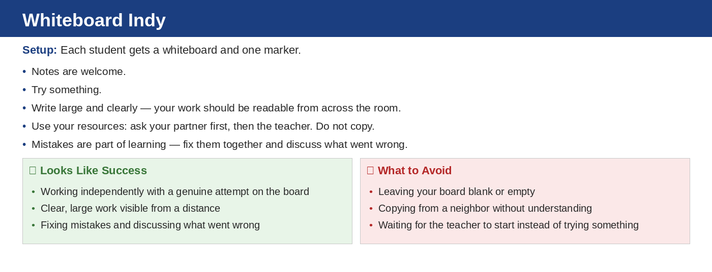

Unit 1 · Section 5 · Activity 2
Whiteboard Indy
Equations as Models
Source: Practice Set 1.5.3
Time: 20–30 min
Grouping: Individual whiteboards
Materials: Whiteboards + markers

Unit 1.5 · Activity 2 · Whiteboard IndyProblem 1
Problem 1
Select model
A bracelet business spends $18$ dollars on supplies and earns $6$ dollars per bracelet. Which equation could be used to find how many bracelets, $b$, are needed to earn $72$ dollars total?
- $18b+6=72$
- $6b+18=72$
- $72b=6+18$
- $6+b=72$
Unit 1.5 · Activity 2 · Whiteboard IndySolution 1
Solution 1
Select model
A bracelet business spends $18$ dollars on supplies and earns $6$ dollars per bracelet. Which equation could be used to find how many bracelets, $b$, are needed to earn $72$ dollars total?
- $18b+6=72$
- $6b+18=72$
- $72b=6+18$
- $6+b=72$
Solution: The correct equation is b. $6b+18=72$. The expression $6b$ represents the money earned from $b$ bracelets, and $18$ is the supply cost or starting amount included in the model.
Unit 1.5 · Activity 2 · Whiteboard IndyProblem 2
Problem 2
Graph to solve
Use the Fundraiser Model graph. Estimate how many boxes are needed to raise $90$ dollars. Then write a matching equation.
Unit 1.5 · Activity 2 · Whiteboard IndySolution 2
Solution 2
Graph to solve
Use the Fundraiser Model graph. Estimate how many boxes are needed to raise $90$ dollars. Then write a matching equation.
Solution: From the graph, $90$ dollars is reached at about $6$ boxes. A matching equation is $15b=90$, where $b$ is the number of boxes. Solving gives $b=6$.
Unit 1.5 · Activity 2 · Whiteboard IndyProblem 3
Problem 3
Compare models
Two students model the same situation. Student A writes $12+5h=47$. Student B writes $5h=35$. Explain how both equations can be connected to the same problem and solve.
Unit 1.5 · Activity 2 · Whiteboard IndySolution 3
Solution 3
Compare models
Two students model the same situation. Student A writes $12+5h=47$. Student B writes $5h=35$. Explain how both equations can be connected to the same problem and solve.
Solution: Both equations can describe a situation with a $12$ dollar starting amount and $5$ dollars per hour for a total of $47$ dollars. Student B has already subtracted the starting amount: $47-12=35$. Then $5h=35$, so $h=7$.
Unit 1.5 · Activity 2 · Whiteboard IndyProblem 4
Problem 4
Build and critique
Create a context that leads to an equation with a non-whole-number solution. Solve it, then explain whether the exact solution or a rounded solution makes more sense in your context.
Unit 1.5 · Activity 2 · Whiteboard IndySolution 4
Solution 4
Build and critique
Create a context that leads to an equation with a non-whole-number solution. Solve it, then explain whether the exact solution or a rounded solution makes more sense in your context.
Solution: Sample answer: A taxi costs $5$ to start plus $3$ per mile. If the ride costs $20$, then $3m+5=20$. So $3m=15$ and $m=5$. To make a non-whole-number solution, use $3m+5=21$, so $3m=16$ and $m=\dfrac{16}{3}=5\dfrac{1}{3}$. The exact solution makes sense because miles can be fractional.
Unit 1.5 · Activity 2 · Whiteboard IndyProblem 5
Problem 5
Solve inequality
Solve: $$a-4>11$$
Unit 1.5 · Activity 2 · Whiteboard IndySolution 5
Solution 5
Solve inequality
Solve: $$a-4>11$$
Solution: Add $4$ to both sides: $a>15$.
Unit 1.5 · Activity 2 · Whiteboard IndyProblem 6
Problem 6
Solve inequality
Solve: $$3k<21$$
Unit 1.5 · Activity 2 · Whiteboard IndySolution 6
Solution 6
Solve inequality
Solve: $$3k<21$$
Solution: Divide both sides by $3$: $k<7$.
Unit 1.5 · Activity 2 · Whiteboard IndyProblem 7
Problem 7
Test value
Determine whether $10$ is a solution to $x\le 10$.
Unit 1.5 · Activity 2 · Whiteboard IndySolution 7
Solution 7
Test value
Determine whether $10$ is a solution to $x\le 10$.
Solution: Yes. Substituting $10$ gives $10\le 10$, which is true because the inequality includes equality.
Unit 1.5 · Activity 2 · Whiteboard IndyProblem 8
Problem 8
Graph in words
Describe how to graph $x>-3$ on a number line.
Unit 1.5 · Activity 2 · Whiteboard IndySolution 8
Solution 8
Graph in words
Describe how to graph $x>-3$ on a number line.
Solution: Use an open circle at $-3$ because $-3$ is not included. Shade to the right because the solutions are greater than $-3$.
Unit 1.5 · Activity 2 · Whiteboard IndyProblem 9
Problem 9
Multi-step inequality
Solve: $$2x+5\le 17$$
Unit 1.5 · Activity 2 · Whiteboard IndySolution 9
Solution 9
Multi-step inequality
Solve: $$2x+5\le 17$$
Solution: Subtract $5$ from both sides: $2x\le 12$. Divide by $2$: $x\le 6$.
Unit 1.5 · Activity 2 · Whiteboard IndyProblem 10
Problem 10
Context bound
A rectangle has length $10$ and width $w$. Its area must be at least $80$ square units. Write and solve an inequality for $w$.
Unit 1.5 · Activity 2 · Whiteboard IndySolution 10
Solution 10
Context bound
A rectangle has length $10$ and width $w$. Its area must be at least $80$ square units. Write and solve an inequality for $w$.
Solution: The area is $10w$. Since it must be at least $80$, write $10w\ge 80$. Divide by $10$: $w\ge 8$.
Unit 1.5 · Activity 2 · Whiteboard IndyProblem 11
Problem 11
Justify boundary
Explain why $x\le 6$ includes $6$ but $x<6$ does not. Connect your explanation to the number-line graph.
Unit 1.5 · Activity 2 · Whiteboard IndySolution 11
Solution 11
Justify boundary
Explain why $x\le 6$ includes $6$ but $x<6$ does not. Connect your explanation to the number-line graph.
Solution: $x\le 6$ means values less than or equal to $6$, so $6$ is included and the graph uses a closed circle at $6$. $x<6$ means values strictly less than $6$, so $6$ is not included and the graph uses an open circle at $6$.
Unit 1.5 · Activity 2 · Whiteboard IndyProblem 12
Problem 12
Compare constraints
Create two different inequalities that both allow $x=4$ but one has a finite maximum value and the other has a finite minimum value. Explain the difference.
Unit 1.5 · Activity 2 · Whiteboard IndySolution 12
Solution 12
Compare constraints
Create two different inequalities that both allow $x=4$ but one has a finite maximum value and the other has a finite minimum value. Explain the difference.
Solution: Sample answer: $x\le 6$ allows $x=4$ and has a finite maximum value of $6$. $x\ge 2$ also allows $x=4$ and has a finite minimum value of $2$. The first gives values at or below a maximum; the second gives values at or above a minimum.
Unit 1.5 · Activity 2 · Whiteboard IndyProblem 13
Problem 13
Identify equation feature
For $y=-3x+18$, identify the starting value and constant change.
Unit 1.5 · Activity 2 · Whiteboard IndySolution 13
Solution 13
Identify equation feature
For $y=-3x+18$, identify the starting value and constant change.
Solution: The starting value is $18$ because that is the value of $y$ when $x=0$. The constant change is $-3$, so $y$ decreases by $3$ each time $x$ increases by $1$.
Unit 1.5 · Activity 2 · Whiteboard IndyProblem 14
Problem 14
Table/equation match
Determine whether the table matches $y=2x+7$.
Unit 1.5 · Activity 2 · Whiteboard IndySolution 14
Solution 14
Table/equation match
Determine whether the table matches $y=2x+7$.
Solution: Yes. Substituting $x=0,1,2,3$ into $y=2x+7$ gives $7,9,11,13$, so the table matches the equation.
Unit 1.5 · Activity 2 · Whiteboard IndyProblem 15
Problem 15
Graph interpretation
Use Representation C. Explain how the graph, a table, and the equation $y=-3x+18$ would show the same rate of change.
Unit 1.5 · Activity 2 · Whiteboard IndySolution 15
Solution 15
Graph interpretation
Use Representation C. Explain how the graph, a table, and the equation $y=-3x+18$ would show the same rate of change.
Solution: The equation shows the rate of change as $-3$. A matching table would show the $y$-values decreasing by $3$ whenever $x$ increases by $1$. The graph would show a line that goes down $3$ units for every $1$ unit to the right.
Unit 1.5 · Activity 2 · Whiteboard IndyProblem 16
Problem 16
Representation choice
Create a situation where a graph is the best representation for answering one question and an equation is best for answering another. Explain both choices.
Unit 1.5 · Activity 2 · Whiteboard IndySolution 16
Solution 16
Representation choice
Create a situation where a graph is the best representation for answering one question and an equation is best for answering another. Explain both choices.
Solution: Sample answer: For a savings account, a graph may be best for seeing when the balance reaches a goal because you can visually estimate the crossing point. An equation may be best for finding the exact balance after a specific number of weeks because you can substitute the input and calculate exactly.
Unit 1.5 · Activity 2Exit Ticket
6-Question Exit Ticket
Equations as Models
1. Which equation models: $20$ dollar fee plus $4$ per item equals $68$ total?
Equations as Models
2. Solve and interpret: $7p+12=54$ when $p$ is the number of packages.
Inequalities
3. Solve: $2x+3<15$.
Inequalities
4. Describe how to graph $x\ge -2$ on a number line.
Representations
5. For $y=-5x+30$, identify the starting value and constant change.
Representations
6. Does the table $x:0,1,2$ and $y:4,9,14$ match $y=5x+4$? Explain briefly.
Unit 1.5 · Activity 2Exit Ticket Answer Key
Exit Ticket Answer Key
Equations as Models
1. Which equation models: $20$ dollar fee plus $4$ per item equals $68$ total?
Equations as Models
2. Solve and interpret: $7p+12=54$ when $p$ is the number of packages.
Inequalities
3. Solve: $2x+3<15$.
Inequalities
4. Describe how to graph $x\ge -2$ on a number line.
Representations
5. For $y=-5x+30$, identify the starting value and constant change.
Representations
6. Does the table $x:0,1,2$ and $y:4,9,14$ match $y=5x+4$? Explain briefly.
Teacher key:
- $4i+20=68$, where $i$ is the number of items.
- $7p+12=54$, so $7p=42$ and $p=6$. This means $6$ packages.
- $2x<12$, so $x<6$.
- Use a closed circle at $-2$ and shade to the right.
- Starting value: $30$. Constant change: $-5$.
- Yes. For $x=0,1,2$, $y=5x+4$ gives $4,9,14$.